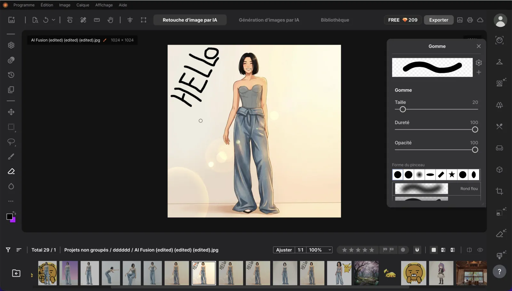

Infinique · AI 이미지 편집
Clor AI
인물 보정, 포즈, 색상 등 AI 도구를 갖춘 사진 편집기로, 웹·데스크톱·모바일에서 사용할 수 있습니다.


배경
AI로 사진 보정하기
Clor AI는 레이어, 브러시, 텍스트, 자르기 기능과 함께 인물 보정, 포즈 변경, 색상 보정을 위한 AI 도구를 갖춘 사진 편집기입니다.
2026년 1월에 Infinique에 입사했습니다. 웹, 데스크톱 앱, 모바일 앱이 하나의 코드베이스를 함께 사용합니다. 제 역할은 Figma 시안을 바탕으로 화면을 구현하고, 주로 모바일에서 보정 도구를 개발하는 것입니다.
작업 내용
UI부터 보정 도구까지
- 01.2026UI 기반 구축: Tailwind.css 색상·폰트 설정, 아이콘, 공통 컴포넌트(드롭다운 메뉴, 모달 창, 알림), 로그인·회원가입 페이지
- 02.2026편집기 도구: 툴바, 브러시·텍스트·도형 패널, 색상 선택기, 이동 가능한 패널, 레이어 크기 조절·정렬·회전 핸들
- 03.2026인물 사진 색상: 슬라이더와 프리셋을 갖춘 색상 보정 패널
- 04.2026모바일 앱: 홈, 라이브러리, 프로젝트, 휴지통, 구독, 클라우드 저장소, FAQ, SMS 인증 회원가입, 편집 페이지
- 07.2026모바일 보정 도구: 눈, 눈썹, 메이크업, 헤어 컬러, 체형, 음식·인테리어·제품 사진 보정. 적용 후에도 설정 수정 가능
- 08.2026포즈: 포즈(스켈레톤) 편집 화면, 포즈 프리셋
- 09.2026수정 작업: 클라이언트 테스트에서 보고된 버그 수정, UI 번역(12개 언어)
일부 화면
로컬 환경에서 캡처한 화면입니다. 사용한 사진은 AI로 생성했거나 저작권 문제가 없는 이미지입니다. 각 화면 아래에 제가 작업한 내용을 적었습니다. 캡처를 클릭하면 크게 볼 수 있습니다.
모바일 앱
데스크톱
배운 점
AI와 함께 코딩하기
Clor AI에서는 매일 Claude Code를 사용해 개발합니다. 다음과 같은 방법으로 활용하는 법을 익혔습니다.
- 컨텍스트올바른 지침 제공: 제안되는 코드가 팀의 컨벤션을 따르도록 AI용 프로젝트 지침 파일(AGENTS.md)을 업데이트 (예: 디자인 시스템 색상)
- 작업 분할한 번에 하나의 문제: 변경 하나에 버그 또는 기능 하나, 명확한 메시지와 클라이언트가 보고한 버그 번호 기재
- 검증반영 전 테스트: 보정 설정에 대한 자동화 테스트, 팀과 함께 만든 QA 도구 활용 (버그별 클라이언트 피드백 확인, 앱에서 시나리오 재현)
- 리뷰최종 확인은 직접: 모든 변경 사항을 직접 검토하고, 보내기 전에 앱에서 직접 테스트
이 방법 덕분에 예를 들어 데스크톱 버전의 보정 도구를 모바일 앱에 맞게 옮기고, 클라이언트가 보고한 버그를 수정할 수 있었습니다.